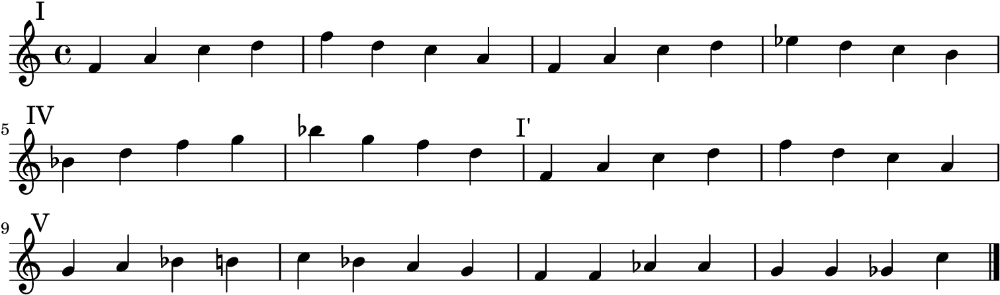

(define the-dream (+ 'scheme 'lilypond))

Lately I've gotten increasingly obsessed with Lisp family of programming languages and am determined to write as little non-Lisp code as possible.
As such, I've started experimenting with writing more Scheme in Lilypond. This is an entirely impractical example, but it gives a glimpse of what's possible. I can't wait to start mapping lists of musical expressions and representing music as trees.
Note to self: Dive deeper into these pertinent blog posts ASAP.
the_dream.scm:
(ly:set-option 'midi-extension "mid")
(define changes
(make-hash-table 4))
(hashq-set!
riffs 'I
#{
\mark \markup { I }
f4 a c d | f d c a |
f4 a c d | ees d c b |
#})
(hashq-set!
riffs 'IV
#{
\mark \markup { IV }
bes4 d f g | bes g f d |
#})
(hashq-set!
riffs 'I'
#{
\mark \markup { "I'" }
f,4 a c d | f d c a |
#})
(hashq-set!
riffs 'V
#{
\mark \markup { V }
g a bes b | c bes a g |
#})
(hashq-set!
riffs 'turnaround
#{
f4 f aes aes | g g ges c |
#})
the_dream.ly:
\version "2.19.6"
\include "lilypond-book-preamble.ly"
\paper { oddFooterMarkup = ##f }
#(load "test-01.scm")
\score {
\relative c' {
#(hashq-ref riffs 'I)
\break
#(hashq-ref riffs 'IV)
#(hashq-ref riffs 'I')
\break
#(hashq-ref riffs 'V)
#(hashq-ref riffs 'turnaround)
\bar "|."
}
\layout { indent = 0 }
}
make_it_rain.sh:
#!/usr/bin/env bash
lilypond "the_dream.ly"
convert -density 200 "the_dream.pdf" -flatten "output.png"